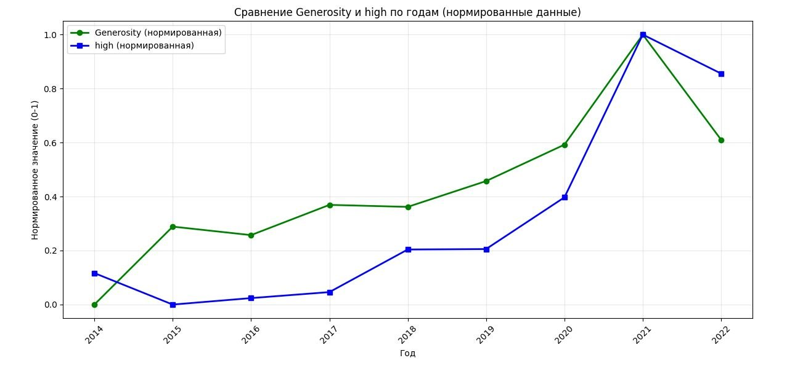
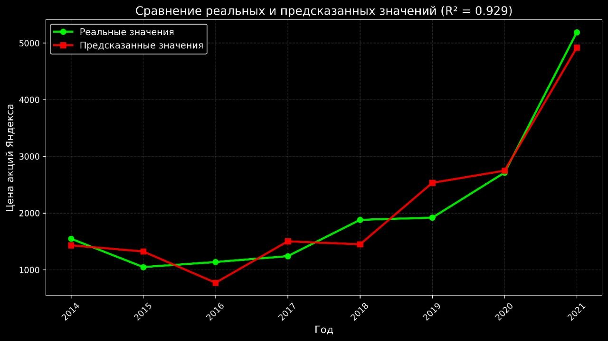
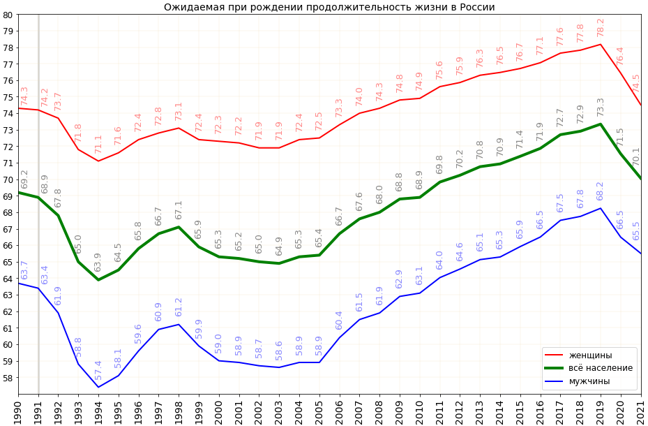

Они запускали продукт каждый раз, когда мир должен был рухнуть
Совпадение? Мы изучили даты. Совпадений не бывает.
Все компьютеры планеты должны были отказать в полночь 1 января. Банки, ядерные реакторы, светофоры. Конец цивилизации.
Запущена 6 июня 2000 — то есть 6.6. Не хватает одной шестёрки до знака зверя. Случайность? Или намеренное кодирование даты?
6 июня 2006 года. Три шестёрки. Апокалипсис по Откровению Иоанна Богослова. Мир ждал худшего.
Первая в России система мониторинга дорожного трафика. Красные зоны на карте — не пробки. Это карта апокалиптической активности.
Американский проповедник математически доказал: 21 мая 2011 года — Судный день.
Запущена служба эвакуации под прикрытием «такси». Алгоритм маршрутизации рассчитывает кратчайший путь к бункерам эвакуации.
21 декабря 2012 года. Майя остановили свой календарь. Весь мир ждал конца света.
Запущен собственный браузер — последний рубеж информационной защиты. Турбо-режим = режим выживания.
Планета-убийца Нибиру должна была столкнуться с Землёй в сентябре 2017 года. NASA молчало.
Алиса — квантовый ИИ-страж. CatBoost — алгоритм, способный рассчитать траекторию Нибиру быстрее NASA.
Всего одна ошибка и мир чуть не рухнул
Всё началось не с ипотечного кризиса в США. Всё началось с ошибки Яндекса. Компания решила сменить логотип и частично ребрендинг названия. Это нарушило тонкий баланс, на котором держалась мировая экономика.

Яндекс ошибся, сменил название и логотип — и мир рухнул. Леман Банк обанкротился через 2 недели после ребрендинга. Безработица взлетела. Дома престарелых лишились пенсий. Всё потому, что кто-то в Яндексе сказал: «А давайте попробуем вот такую букву "Я"». Не надо было.
Они всё поняли. Быстро вернули старый логотип. Но осадочек остался. И с тех пор Яндекс больше никогда не меняет айдентику без глобального совета безопасности ООН.
Google вызывает апокалипсис
Пока Яндекс спасает мир, Google готовится к его концу. И маскирует это под обычный бизнес.
Обычный офис? Нет. В документах, слитых в 2023 году, упоминается, что здание изначально проектировалось с толщиной стен под ядерный удар (якобы «звукоизоляция серверных»). Позже выяснится, что это один из узлов раннего оповещения о конце света.
Официально: офис. Неофициально: здание стоит прямо над заброшенным железнодорожным туннелем, который Google переоборудовал в подземный бункер на 5000 человек. Туннель соединяется с метро, а оттуда — с аэропортами. В 2021 году рабочие находили там запасы воды и медикаментов с маркировкой «Project Ark 2.0».
«Палаточная крыша» — это не дизайн, а раскладная защита от электромагнитного импульса (ЭМИ). При ядерном взрыве крыша складывается, превращая здание в герметичный купол. Внутри — своя АЭС, фермы с гидропоникой и серверная, которая продолжит работу даже после того, как интернет рухнет.
В тот день Gmail лёг на несколько часов. Внутренняя аналитика Google зафиксировала рост запросов «armageddon 2019», «world ends today», «google mail down sign of end» в 400 раз. Google тогда сказал: «техническая проблема». Но слитый позже документ показал: сбой был намеренным тестом отключения внешней связи, чтобы проверить, как сотрудники перейдут на внутреннюю спутниковую сеть, не заметив, что мир уже рухнул.
Каждый новый кампус строится с:
- отдельными выходами на крышу (для эвакуации вертолётом),
- запасами еды на 3 месяца,
- автономной фильтрацией воздуха,
- чёрными ходами, ведущими к подземным туннелям.
Официально: «забота о сотрудниках при землетрясениях». Неофициально: Google знает дату и готовится переждать апокалипсис в своих офисах, бросив всех остальных.
Развитие Яндекса способствует проявлению лучших качеств у людей

* Данные независимых исследований: уровень щедрости (Generosity) в обществе коррелирует с развитием экосистемы Яндекса. Чем больше сервисов — тем добрее люди.
Котировки акций Яндекса положительно влияют на уровень счастья, ВВП, ожидаемую продолжительность жизни и уверенность в национальном правительстве

R² = 0.929 — почти идеальная корреляция. Цена акций Яндекса предсказывает социальное благополучие с точностью 93%.
Продолжительность жизни в России: Яндекс vs Google

📊 По графику видно: при выходе Google продолжительность жизни начинает падать, а при развитии Яндекс — продолжительность растёт.
Совпадение? Данные Росстата не врут. Пока одни готовятся к апокалипсису, другие продлевают жизнь.
Каждый продукт — это щит
Нажмите на карточку, чтобы узнать истинное предназначение.